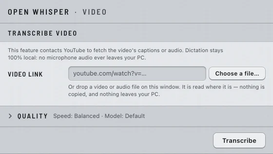

Besides dictation, Open Whisper can transcribe a YouTube video from its link, or a video or audio file on your computer. Everything happens in the video window: you give it the video, it gives you the text, which you copy or save as text or subtitles.
The video window
- Open the Open Whisper menu, in the menu bar (Mac) or the notification area (Windows).
- Choose Transcribe YouTube Video…. The same window takes local files too.
The window is headed Transcribe video. It has a Video link field, a Choose a file… button, and a Quality section, closed until you open it. You can resize the window; only the transcript box scrolls.
The window shows one notice at the top:
Mac
This feature contacts YouTube to fetch the video's captions or audio. Dictation stays 100% local: no microphone audio ever leaves your Mac.
Windows
This feature contacts YouTube to fetch the video's captions or audio. Dictation stays 100% local: no microphone audio ever leaves your PC.
A link uses the network; a file on your computer does not. Privacy lists every use of the network.



From a YouTube link
Open Whisper reaches YouTube through yt-dlp, a free tool from another project. You install it once. The app never installs or updates it for you, and a local file never needs it.
Mac
Install it with Homebrew:
brew install yt-dlpUpdate it with brew upgrade yt-dlp.
Windows
Install it with winget, in Command Prompt or PowerShell:
winget install yt-dlp.yt-dlpUpdate it with winget upgrade yt-dlp.yt-dlp. A copy installed with Scoop or Chocolatey is found too.
Open Whisper needs yt-dlp 2025.01.01 or newer. It checks when the window opens and each time you press Transcribe. If yt-dlp is missing or too old, the window says so, with the command to run. YouTube changes often; when links that used to work start failing, update yt-dlp first.
- Copy the video's link. If the clipboard holds a video link when the window opens, the field is already filled.
- Paste it into Video link.
- Press Enter or click Transcribe.
The link must point to one video: youtube.com/watch?v=…, youtu.be/…, or a Shorts, embed or /live/ link. Playlists, channels, @ pages, searches and other sites are refused before anything runs.
From a file on your computer
- Click Choose a file…. The panel opens in your Movies folder (Mac) or Videos folder (Windows).
- Pick the file. The transcription starts right away.
Or drag the file from the Finder or the Explorer and drop it on the window. One file at a time: if you drop several, the window says One file at a time — … were dropped.
The file is read where it is. Nothing is copied, nothing is written next to it, and nothing leaves the computer. Only its sound is used: the main audio track, up to 3 hours long.
| Container | Audio it can read |
|---|---|
| MP4, M4A, MOV, 3GP | AAC, ALAC, PCM, MP3 |
| MKV, WebM | Vorbis, FLAC, AAC, MP3, PCM |
| OGG | Vorbis, FLAC |
| MP3, FLAC, WAV, AIFF, CAF | the file's own audio |
Refused, with the name of what is missing: Opus audio (in WebM, MKV or OGG), AC-3, E-AC-3 and DTS audio, and the AVI, WMV and ASF containers. Export the file again as MP4 or M4A with AAC, or as MP3, FLAC or WAV, and it works.
Captions or this device
A video link can be transcribed in two ways. Open Whisper asks, for each video, and never decides for you.
- When the video has captions: This video has captions. Using them is almost instant. Choose Use the captions, or Transcribe on this device anyway to have Open Whisper listen to the audio itself.
- When it has none:
Mac
This video has no usable captions. Open Whisper can transcribe the audio here on your Mac — that downloads the audio and takes a few minutes. Choose Transcribe on this device, or Cancel.
Windows
This video has no usable captions. Open Whisper can transcribe the audio here on your PC — that downloads the audio and takes a few minutes. Choose Transcribe on this device, or Cancel.
Captions written by a person are preferred to automatic ones. If you pinned a Language in Settings, captions in that language come first; otherwise, the video's original language. On this device, the audio is downloaded into memory, transcribed, and thrown away; it is never saved.
A file is always transcribed on this device: there is nothing to choose.
Quality
Open Quality to see two choices. Closed, it shows them in one line: Speed: … · Model: ….
Speed has three settings. Accurate is the default.
| Speed | What the window says |
|---|---|
| Fast | The fastest. On hard passages it makes more mistakes, and a passage that comes out badly is redone. |
| Balanced | Makes fewer mistakes than Fast and, since it redoes fewer passages, often finishes before it. |
| Accurate | The most careful: the best the chosen model can do, and the slowest. |
Model offers the same four models as dictation, chosen separately. The default is the bundled one. Choosing one that is not on the computer downloads it first: Downloading the model… this can take a while. See Models.
Both choices are remembered, and are the starting point for the command line too. They never change dictation. The language comes from Language in Settings: pin it if you know the language of the video.
Progress and cancelling
The Progress section shows a percentage, a bar and the current step: Looking up the video…, Fetching the captions…, Downloading the audio…, Preparing the audio…, Transcribing on this device….
- Cancel stops the job within about two seconds. Whatever was already transcribed stays, marked as partial.
- If you dictate while a video runs, the video waits: Paused while you dictate — it will carry on by itself.
- Repetition detected — transcribing again from the start… means the model got stuck repeating itself, and Open Whisper started over. You need do nothing.
- Open Whisper transcribes one video at a time. Wait for the current one, or cancel it, before starting another.
- While a video runs, the menu shows its percentage next to Transcribe YouTube Video…. Quitting asks first: A video transcription is still running. Quitting now will lose it. Choose Keep running or Quit anyway.
The transcript
One line says where the text came from: Captions written by a person, Captions generated automatically by YouTube or Transcribed on this device by Open Whisper. A notice may follow:
- Partial transcript — the job stopped early, but nothing already produced was lost.
- Excessively repeated passages were trimmed. This usually happens over music or long silence.
- No speech found in this video.
When it transcribes on the device, Open Whisper leaves out lines it heard over silence or noise with no voice, and subtitle credit lines the model sometimes invents. Captions are kept exactly as they are.
Format
- Text: a short header (title, channel, date, duration, link or file, language, source), then the text in paragraphs.
- Subtitles (SRT): timed lines, for video players and editors.
- Subtitles (VTT): timed lines for the web, with the header as a note.
Copy and save
- Copy puts the transcript, in the chosen format, on the clipboard: Copied.
- Save writes the file right away, without asking, named after the video's title. It never overwrites: a second save becomes
Title (2).txt. The window says Saved to …, followed by the path. - Save As… asks where, starting in your Downloads folder. Cancelling writes nothing.
Mac
Save writes to ~/.open-whisper/transcripts/. The folder is hidden in the Finder: click Show in Finder after saving, or press ⇧⌘G in the Finder and type ~/.open-whisper/transcripts.
Windows
Save writes to %USERPROFILE%\.open-whisper\transcripts\. Click Show in Explorer after saving to open it.
Closing the window
If you close the window before copying or saving, it asks: Close without copying or saving? The transcript is still here when you reopen this window. Choose Go back or Close anyway. The transcript waits in the window until you start another one, or quit the app.
Messages and what to do
| Message | Cause | What to do |
|---|---|---|
| That is not a YouTube video link. Paste a link to a single video — playlists and channels do not work. | The link is not one YouTube video. | Open the video itself and copy its link. |
yt-dlp is not installed. Install it with: brew install yt-dlp (Mac) or winget install yt-dlp.yt-dlp (Windows) | yt-dlp is missing. | Run the command, then try again. |
The installed yt-dlp is too old to work. Update it with: brew upgrade yt-dlp (Mac) or winget upgrade yt-dlp.yt-dlp (Windows) | yt-dlp is older than 2025.01.01. | Run the command, then try again. |
| This video is unavailable — it may be private, removed, or may never have existed. | The video cannot be opened. | Check the link in a browser. |
| This video is age-restricted and cannot be reached this way. | The video has an age restriction. | Not possible with Open Whisper. |
| This video is not available in your region. | The video is blocked where you are. | Not possible from your region. |
| Live streams are not supported. Try again once the recording is published. | The video is live. | Wait for the recording. |
| This video is longer than the 3-hour limit. Longer videos do not fit in memory safely. | The video or file is over 3 hours. The same words appear for a file. | Cut it into parts under 3 hours. |
| This video has no usable caption track. | You chose captions, and none can be used. | Choose Transcribe on this device. |
| This video offers no audio format Open Whisper can decode. | YouTube offers no audio the app can read. | Not possible for this video. |
| YouTube is rate-limiting requests right now. Wait a few minutes and try again. | Too many requests in a short time. | Wait a few minutes. |
| No internet connection. | A link needs the network. | Connect and try again. |
| Could not decode this video's audio. | The video's audio could not be read. | Try again. If it repeats, update yt-dlp. |
| Transcription failed. Whatever was already transcribed is still below. | The engine stopped partway. | Copy or save what is there, then try again. |
| Open Whisper transcribes one video at a time. Wait for the current one, or cancel it. | A video is already running. | Wait, or press Cancel. |
| Could not save to …. The transcript is still here — use Copy. | The file could not be written. | Use Copy, or Save As… somewhere else. |
| It failed for a reason Open Whisper does not recognize. yt-dlp said: … | yt-dlp reported something new. | Update yt-dlp. If it persists, report it. |
| Open Whisper cannot decode this file's audio (…). Export it as MP4/M4A with AAC, or as MP3, FLAC or WAV, and try again. | The file's audio or container is not supported. | Export it again in one of those formats. |
| Cannot read this file: there is no file at that path. | The file moved or was deleted. | Choose it again. |
| That path is a folder, not a media file. Open Whisper transcribes one file at a time. | You gave a folder. | Choose one file inside it. |
| Cannot read this file: no permission. Check the file's permissions and try again. | Your account cannot read the file. | Check the file's permissions. |
| This file is empty or truncated — nothing in it can be decoded. | The file is empty or incomplete. | Get a complete copy. |
| This file has no audio track, so there is nothing to transcribe. | The file has picture but no sound. | Use a file with sound. |
| Cannot read this file: …. | Another read error, named after the colon. | Check the disk or the file, then try again. |
| Could not save the choice: … | A Quality choice was not saved. | Choose it again. |
More problems and their fixes are in Troubleshooting.